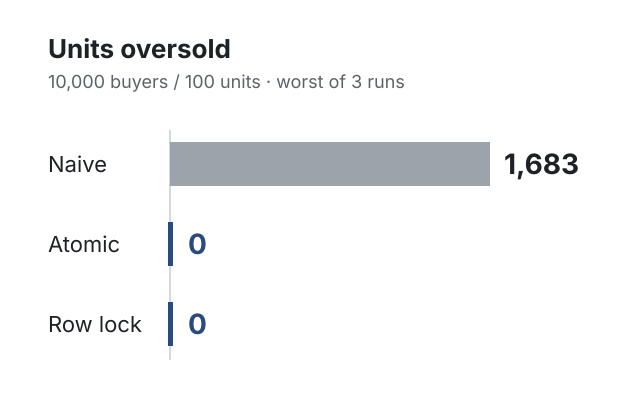

Backend and AI engineer
I build LLM applications and improve them through evaluation and output checks. On the backend, I work from API and database design through to cloud deployment. I start with the problem, compare approaches, and build the one that fits.
- Location
- Tokyo, Japan
- Focus
- Backend development, LLM applications, AWS infrastructure design
- Certified
- Microsoft Azure AI Apps and Agents Developer Associate (AI-103)
Projects
Personal projects in backend engineering, AI, and maps.
-
Formline
Built for a Microsoft hackathon. Analyzes synthetic match data and writes sourced commentary in Japanese and English.
- Focus
- Verifying LLM output and improving it through evaluation
- Stack
- Python, FastAPI, Microsoft Agent Framework, Next.js, Azure
- Result
- Caught 99.3% of 1,066 injected errors, 0 false positives
Runs on Azure Container Apps. First load takes about 30 s.
-

Flash Sale API
An API tested to never oversell when buyers rush a limited sale.
- Focus
- Inventory consistency under concurrent orders, comparing three approaches
- Stack
- Go, PostgreSQL, Docker
- Result
- 0 oversold with 10,000 simulated buyers
-
Candidate Hub
A hiring app that reads Japanese résumés with AI for a person to check and register.
- Focus
- Three layers of AI output checks, plus human review
- Stack
- PHP, Laravel, Python, FastAPI, Azure OpenAI
- Result
- Public demo
-
CardWisser
A flashcard service for people learning Japanese.
- Focus
- LLM-generated explanation cards, with audio
- Stack
- TypeScript, Next.js, NestJS, MongoDB Atlas, AWS, LLM and speech APIs
- Result
- Live service
-
Sengoku Castle Map
An interactive map showing how Sengoku-era castles and clans changed over time.
- Focus
- Castle owners by year, and typo-tolerant search
- Stack
- TypeScript, React, MapLibre GL
- Result
- v1.2 released with 134 castles and 161 clans


Skills and certifications
Technologies used in my personal projects, and certifications I hold.
| Languages | Go, Python, TypeScript, PHP |
|---|---|
| Backend | Node.js, NestJS, FastAPI, Laravel, REST APIs |
| Databases | PostgreSQL, MongoDB |
| Cloud and operations | AWS, Azure, Docker, CI/CD |
| AI | LLM integration, AI agents, output verification, evaluation |
| Certifications | Microsoft Certified: Azure AI Apps and Agents Developer Associate (AI-103, Nov 2026), MongoDB Associate Database Admin (Feb 2023) |
| Spoken languages | English, Japanese, Chinese |